2 days: San Juan & the Interior
The old city and the mountains behind it. For a long weekend.
- Day 1Old San Juan, Unhurried, then San Juan After Dark
- Day 2River & Stone or The Cordillera
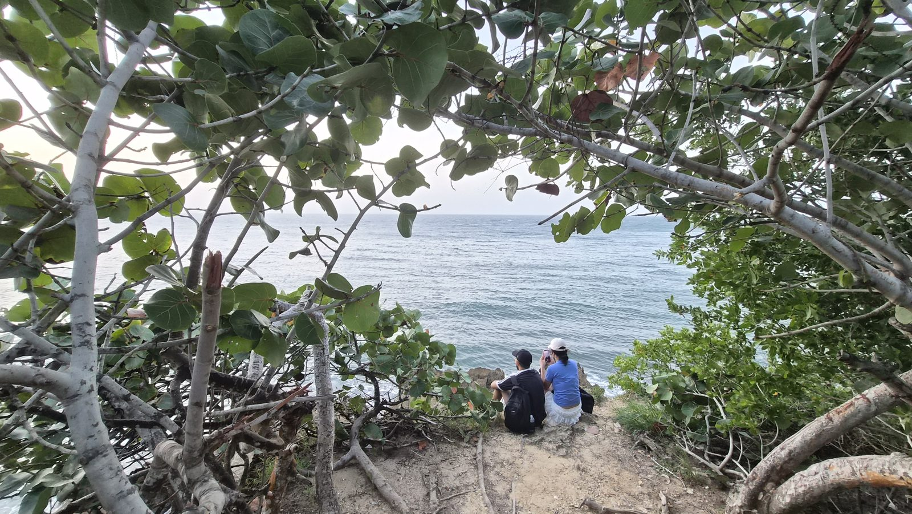
Days and journeys · Puerto Rico
Days across Puerto Rico, private or shared, and private journeys that join them, led by people who call this island home.
Every Last Antilla day can be private, for your party alone, or shared with a small group of travelers; journeys are always private. On a private day your host picks you up where you are staying, on a shared day in Old San Juan, Condado or Isla Verde, then drives the whole day and knows which road to take when the plan should change. Tables are reserved, entrances are arranged, and the day is never rushed.
Book a single day, or join several into a journey of two to five days. Longer stays can be designed on request.
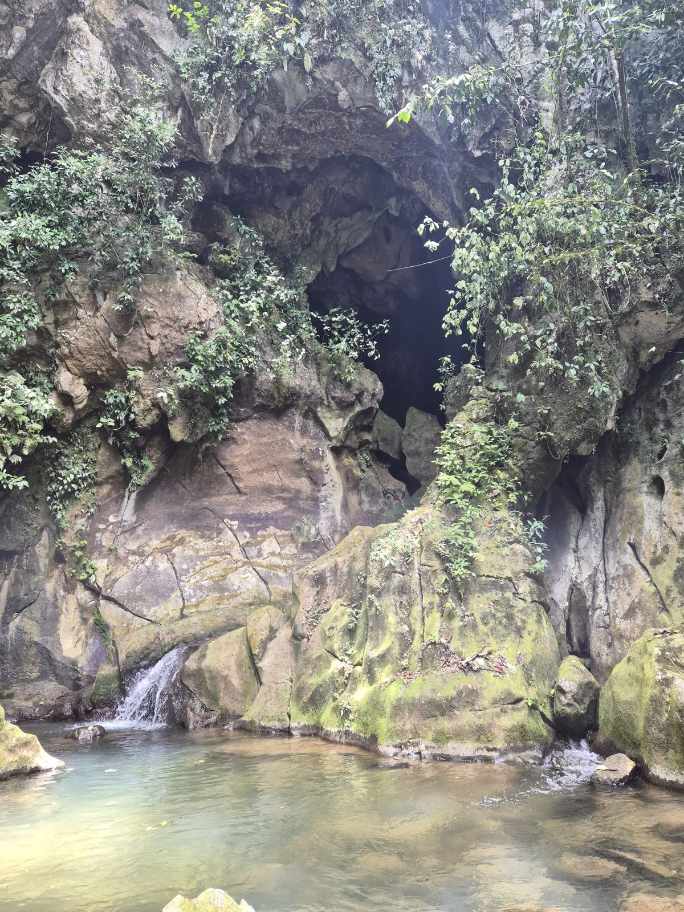
Each day stands on its own. Each one also fits inside a longer journey.
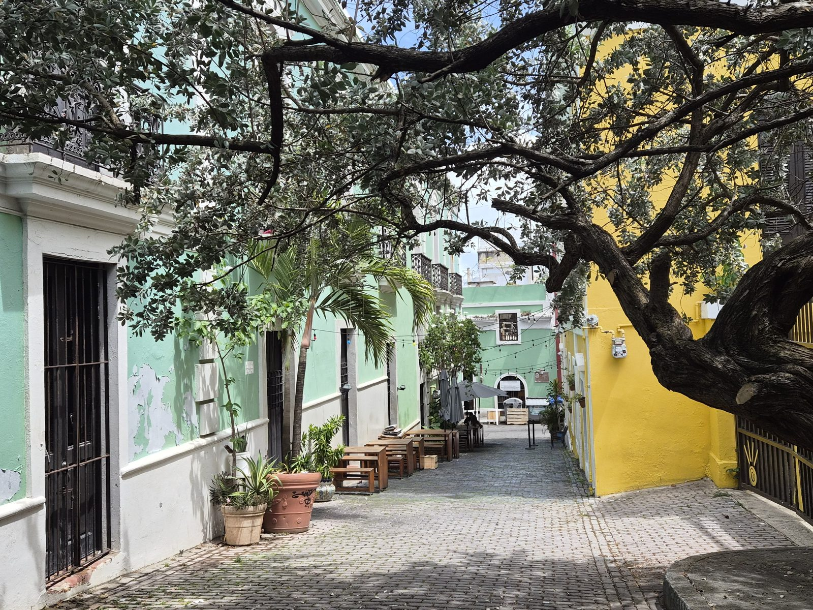
Five centuries of streets, walked at the pace of the people who live on them.
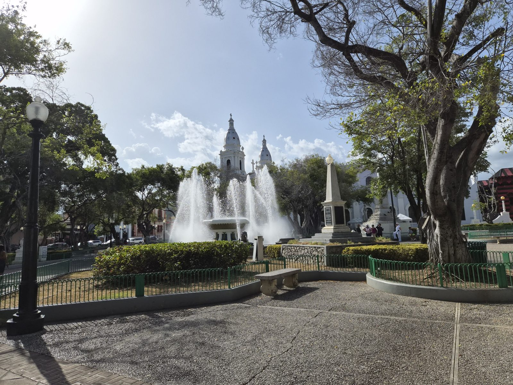
Ponce is grand, warm and proud of it. We give it the whole day.
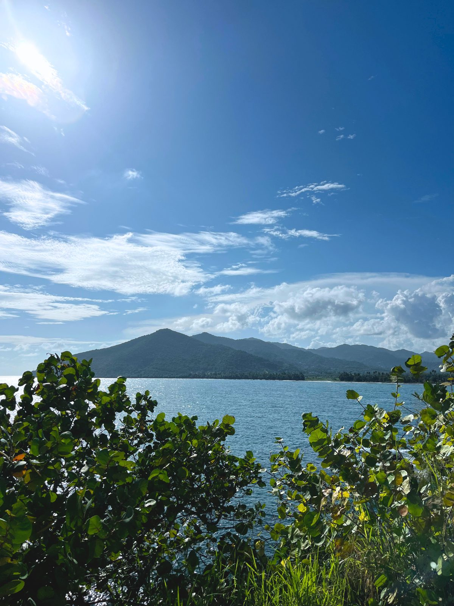
The road through the middle of the island, and the towns that grew along it.
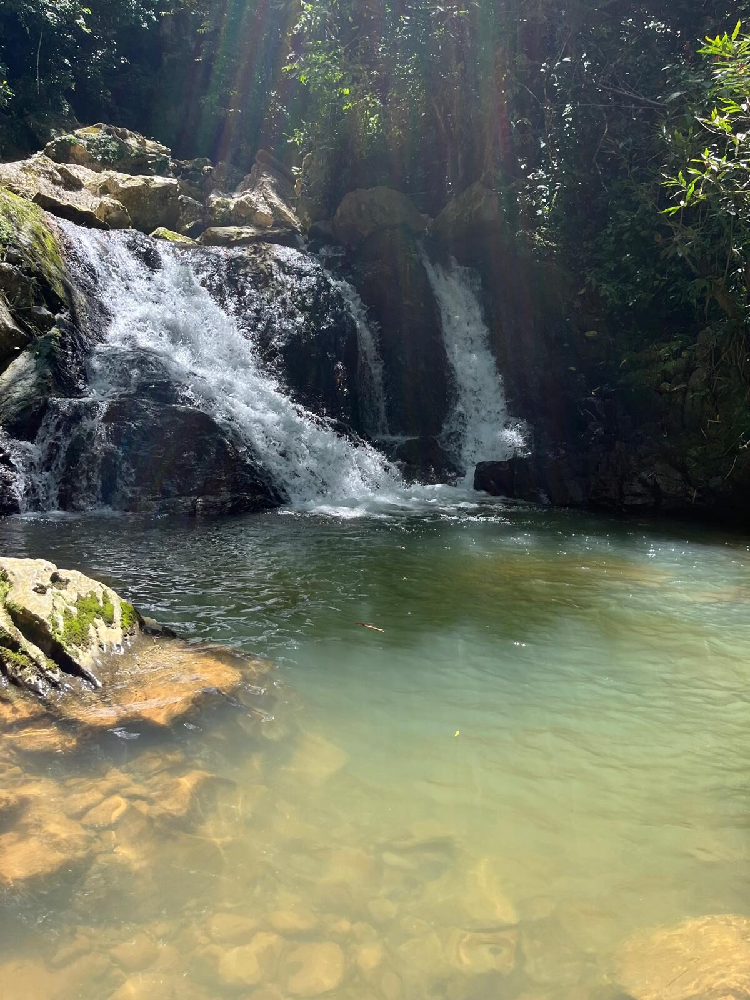
Cold water, warm stone, and a swim you will remember on the flight home.
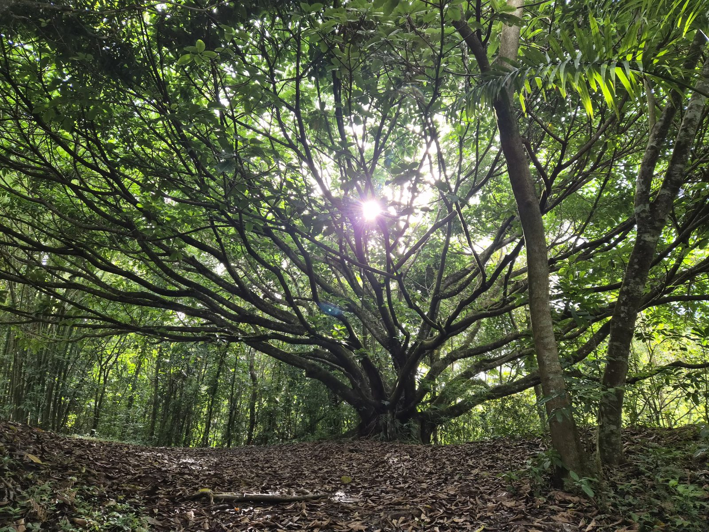
A day designed to lower your shoulders.
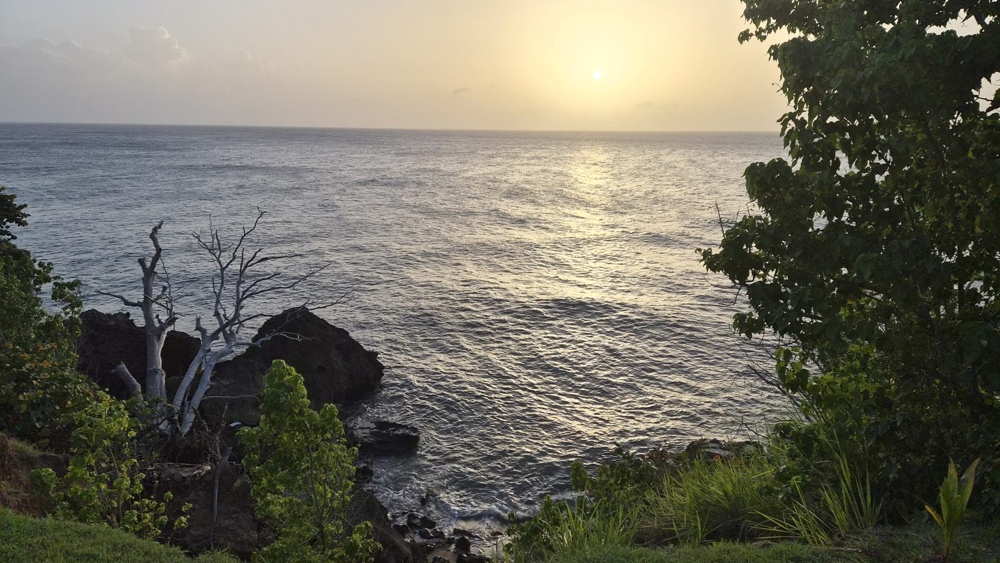
From the mountains to the western coast, arriving as the light turns.
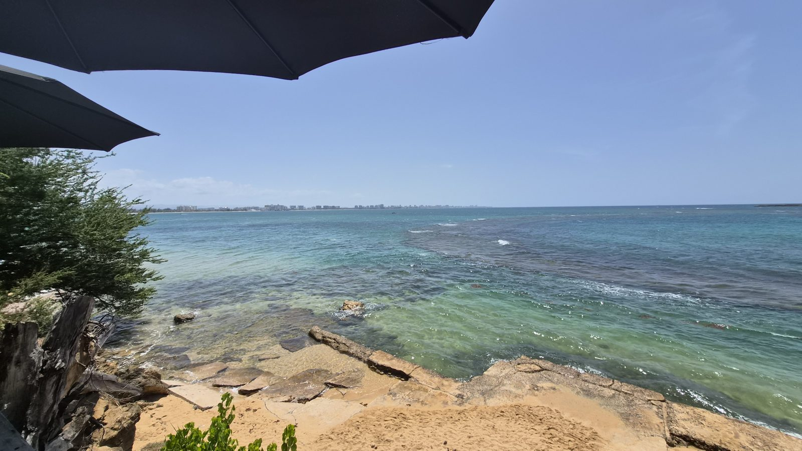
Just east of San Juan, a coast with its own history and its own rhythm.
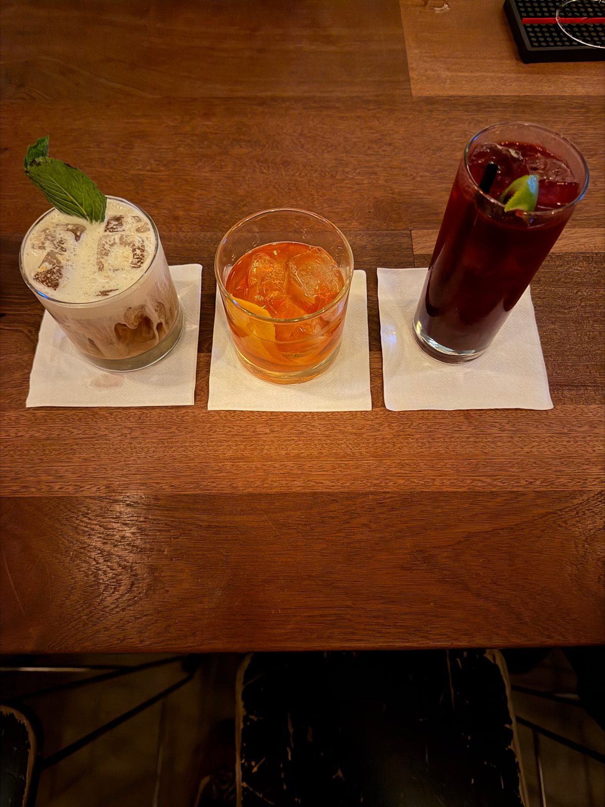
San Juan’s cocktail rooms, at the hour they come alive.
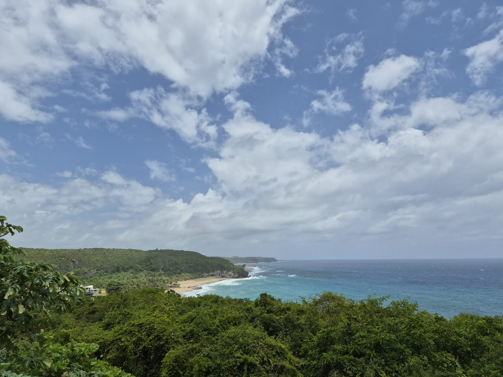
Days joined into one private trip, in the order that makes sense on the map. Each journey is a starting point; we adjust it to you.
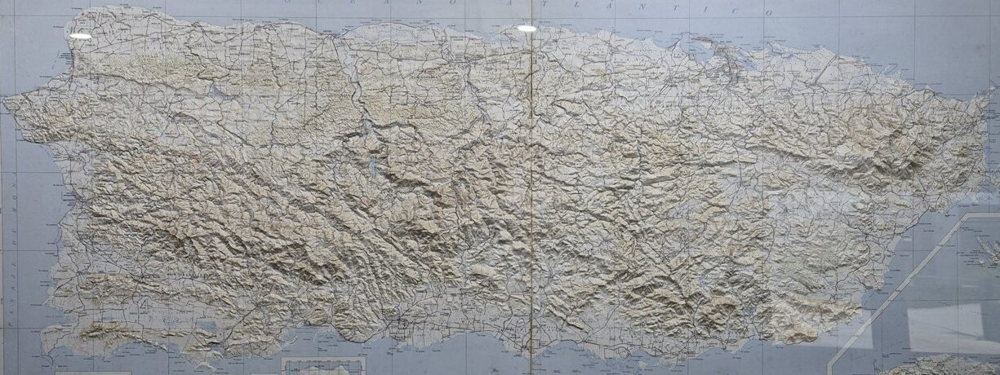
The old city and the mountains behind it. For a long weekend.
North, center and south. The shape of the whole island.
Coast, mountains, south and west. Puerto Rico, end to end.
Add Slow Water, River & Stone, or a free day between, and we will rebalance the journey around it.

A day for your party alone, or shared with a small group with the same day in mind. Journeys are always private. The same host and the same care either way.
Someone from here who drives you, speaks English and Spanish, and changes the plan when the day asks for it.
Tables, entrances and timings are held in advance, so the day runs without you watching the clock.
On a private day, stay longer where you want and skip what does not interest you. A shared day follows a set plan, with a group small enough that no one is hurried.
Every day in the collection follows roads, tables and rivers our hosts know by heart.
We will tell you what depends on the weather and what we cannot promise, before you book.
Four steps
Dates, who is coming, the pace you like, what you want to come home remembering.
A considered itinerary, built around you and adjusted until it feels right.
Reserve online in a few steps, with a clear summary of every day.
Your host meets you on the first morning. Everything else is arranged.
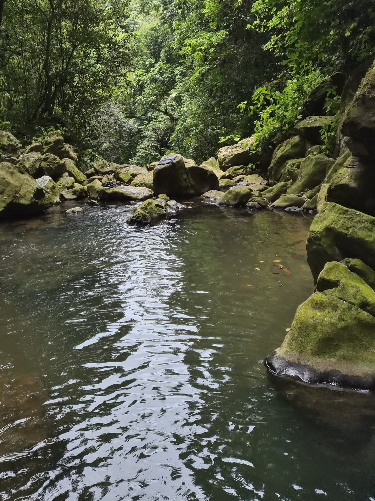
A local guide with you for the whole day, who knows the island from the inside.
Pickup where you are staying on a private day, or in Old San Juan, Condado or Isla Verde on a shared one, and one vehicle from the first stop to the last.
Tables, entrances and timings arranged before you arrive, and adjusted on the day if the weather asks.
We recommend places to stay that suit your style and your route. You book directly; we plan the days around it.
FAQ
It can be. Every day can be booked privately, for your party only with your own host and vehicle, or shared with a small group of travelers. Journeys are always private.
Yes. Every day can be booked on its own or joined into a journey.
No. We recommend places that suit your style and route; you book directly, and we plan the days around it.
We adjust the order of the day, or the days, so the plan works with the weather. Some rivers and trails close after heavy rain, and we will tell you when that happens.
Yes. The pace is set for your group. San Juan After Dark is for adults only.
Plan your days
Four quick choices and a short note. Your host takes it from there.
Or write to us at lastantilla@gmail.com
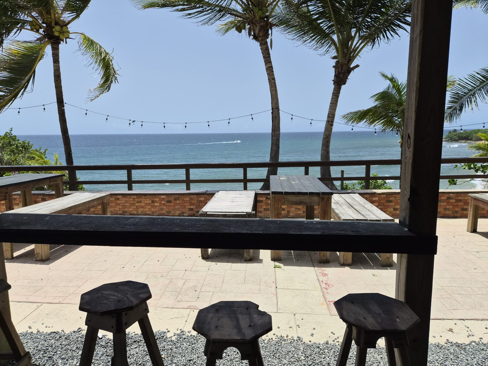
Cinco días bastan para conocer una isla. Para quererla, hay que volver.
Five days are enough to get to know an island. To love it, you have to come back.